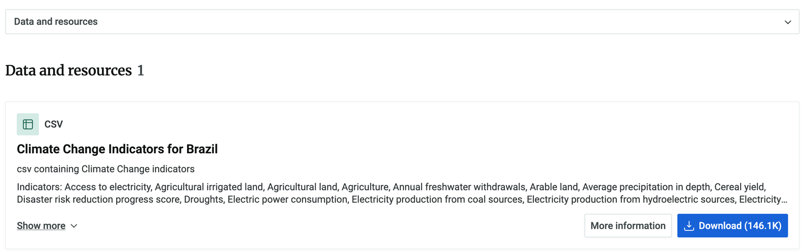

開始 約 5 分鐘
這一課要練習資料分析的第一步：資料探索。你會自己下載巴西的氣候資料，把它整理成好讀的表格，處理缺失的資料，最後選出三個你想研究的項目。全部用點選、拖拉就能完成，不用寫程式。
先輸入你的名字 待討論
名字會一直顯示在畫面右上角，點一下就能改；之後下載的筆記也會帶上你的名字。
步驟 1 什麼是 CSV？ 約 5 分鐘
CSV 是 comma-separated values（逗號分隔值）的縮寫。它是一種非常簡單、非常常見的檔案格式，用來儲存和分享資料，資料量很大的時候特別好用。
一個很小的 CSV 檔案，打開來其實就是這樣的文字，每一行是一筆資料，用逗號隔開：
Name,Age,Favorite Food Ada Lovelace,36,Hot Dogs Grace Hopper,85,Strawberries Alan Turing,41,Cheese Sandwich
你可以把 CSV 想成簡化版的試算表；事實上，Excel 和 Google 試算表都能直接打開 CSV：
今天要用的氣候資料 CSV 大得多，有時候甚至有上百萬列。想像一下要捲動那麼大的試算表！資料太多的時候，科學家會改用程式（或像這個網頁這樣的工具）來處理。
- 你會在試算表中查看什麼類型的資料？
- 你會使用程式（或工具）查看什麼類型的資料？
步驟 2 下載巴西的氣候資料 約 5 分鐘
今天要用聯合國人道資料交換平台（HDX）的資料。HDX 在 2014 年上線，是一個開放平台，上面有大量和人道危機、全球議題有關的資料，由聯合國人道事務協調廳（OCHA）的人道資料中心管理。
之後的課程，你可以自己挑一個國家的資料。現在先完成資料分析流程的第一步「取得資料」：自己去下載巴西的氣候變遷資料。
為什麼選巴西？
- 巴西是生物多樣性的熱點，亞馬遜雨林常被稱為「地球之肺」，能吸收二氧化碳、製造氧氣。它對全世界都很重要，也直接受到氣候變遷影響。
- 氣候變遷對巴西原住民的影響特別大，他們的生計和文化傳統都和環境緊緊相連。
- 巴西是牛肉、黃豆等糧食的全球主要供應國，農業既造成氣候變遷，也受到氣候變遷影響。
- 巴西會遇到各式各樣的極端天氣，從乾旱到洪水都有。
怎麼下載
- 打開 https://data.humdata.org/dataset/world-bank-climate-change-indicators-for-brazil（會開新分頁）。
- 往下捲到 Data and resources，在 Climate Change Indicators for Brazil 那一格，按右下角藍色的 Download。
- 下載好的檔案應該叫做
climate-change_bra.csv。 - 回到這裡，把檔案拖進下面的框框上傳。

上傳你下載的檔案
檔案只會在你的瀏覽器裡處理，不會上傳到任何伺服器。世界銀行在 2025 年更新資料後，新下載的檔案已經沒有「二氧化碳排放量」「甲烷排放量」等排放欄位，投影片裡用到這些欄位的例子，看投影片上的數字討論即可。
- 上傳好就先停下來，等老師說明下一步。這個檔案總共有幾列？每一列記了些什麼？
步驟 3 怎麼看一張資料表 約 10 分鐘
你剛上傳的巴西資料是一張有欄（直的）、有列（橫的）的表格。它有一千多列，資料量太大，一次全部攤開反而看不清楚，所以這裡先只看前 100 列。
資料很多時，我們常常只想看其中一部分。按下面的按鈕，看看每一種看法會留下哪些資料。
- 你可以對像這樣的資料表做哪些操作？
- 什麼時候你會只想看某幾欄？什麼時候只想看某幾列？
步驟 3 把巴西的資料整理成資料表 約 5 分鐘
上一步你看到，原始檔一列只有一個數字，想看「某個指標這幾十年怎麼變」很困難。這一步要把它整理成「一年一列、一個指標一欄」的表格。
- 整理好先停在這裡，還不要進「處理缺失」。整理前是幾列？整理後變成幾年 × 幾個指標？
步驟 3 刪掉缺太多資料的欄位 約 5 分鐘
空白的資料沒辦法幫我們理解巴西的氣候變遷，所以先做一點資料清理：刪掉缺失比例 60% 以上的欄位。缺很多資料的欄位雖然也有資訊，但很難從裡面看出規律或趨勢。刪之前，先看看每一欄是哪幾年有資料，以及刪掉之後表格還剩什麼。
- 我們如何知道資料是否缺失？資料缺失可能代表什麼？
- 缺失資料可能會在資料分析流程的後續階段造成哪些問題？
步驟 4 熟悉氣候資料：選一個欄位 約 5 分鐘
現在每一欄都至少有一些資料了。花幾分鐘一欄一欄看，挑一個你最想深入了解的，放進「欄位 1」。
右邊的資料只列出有數字的年份。有些欄位早年沒有資料，這不用擔心；如果空白太多讓你很困擾，可以請老師推薦別的欄位。
- 你選了哪個欄位？為什麼？寫在學習單上，再繼續選另外兩個欄位。
步驟 4 再選兩個相關的欄位 約 10 分鐘
有了第一個欄位，接著找和它有關的欄位。其中一個方法是看相關係數：它幫每一對欄位算出一個介於 −1 到 1 的數字。數字越接近 1 或 −1，兩欄的關係越強；正數是一起變大，負數是一個變大另一個變小。
你選的三個欄位
繼續之前，先讓老師看過。
- 為什麼可能會想把兩、三種資料畫在同一張圖上？
- 相關性高的欄位放在一起比較有趣，還是相關性低的？相關性有可能高到不適合嗎？（提示：森林面積的兩個欄位）
- 甲烷排放量與溫室氣體總排放量的相關性會高還是低？人口可用電力比例與再生能源消耗量呢？先猜，再看投影片上的數字。
- 和夥伴或小組分享你選的欄位：為什麼選這些欄位？
- 你預期會看到哪些模式？為什麼？
- 這些欄位缺了多少資料？這可能會造成哪些問題？
步驟 4 只留下想要的資料 約 10 分鐘
既然不會再看其他欄位，就把表格縮小成只有你選的三欄；再把三欄中任何一欄是空白的年份刪掉。先用一個小範例練習。
小範例
一張 5 列 × 5 欄的表格，每一欄都故意空了一格。勾選要留下的欄位，看看會發生什麼事。
換你了：處理你的三個欄位
- 刪掉有空白的年份之後還剩幾年？少掉的年份會不會影響你的結論？
步驟 5 把整理好的資料存起來 約 5 分鐘
我們把原本的檔案整理成只剩重要資料的乾淨表格。現在把它下載到你的電腦。第三課一開始要再上傳這個檔案。
- 完成第二課：確認
my_brazil_climate_data.csv已經下載到你的電腦，並記得放在哪裡。